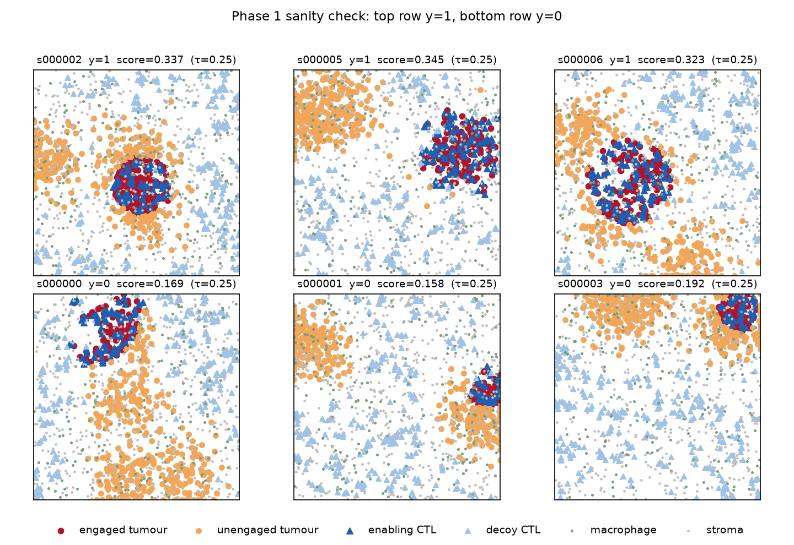

The problem
Give a graph neural network a slice of tumour tissue, one node per cell, and it will predict a tissue-level outcome. The question everyone asks next is which cells drove the prediction, and there is a standard toolkit for answering it: GNNExplainer, attention rollout, integrated gradients. Papers use these outputs to make biological claims.
The difficulty is that these methods are evaluated on real tissue, where the cells that actually drive the outcome are unknown. A method highlights some cells, the cells look plausible, and the explanation is accepted. Faithfulness gets asserted rather than measured, because on real data there is nothing to measure it against. The claim is not so much unverified as unfalsifiable.
Building tissue where the answer is known
The way out is to give up on real tissue and construct a setting where the answer is written down in advance. Cells get a type, a six-channel marker vector and a position, placed under rules I control. The label is then defined as an explicit function of that cell table: a sample is positive when the fraction of tumour cells with a cytotoxic T cell within 30 µm exceeds a threshold.
Because the rule is mine, every cell that participates can be recorded at generation time. That recording is the whole point of the exercise, and it is more than a list of important cells.
| Recorded per sample | What it is |
|---|---|
| constructive drivers | engaged tumour cells and the T cells enabling them |
| counterfactual set | an irredundant set whose removal flips the label, verified by leave-one-out |
| decoys | T cells with identical markers sitting away from any tumour, causally inert |
| signed relevance | +1 for evidence, −1 for counter-evidence, 0 for irrelevant |
The signed vector matters more than it looks. The score is a ratio, so unengaged tumour cells sit in the denominator and removing one raises the score. They are evidence against the positive class, and a method that assigns them negative attribution is being correct. An earlier version of the protocol scored attributions against a binary mask and would have marked exactly that behaviour wrong.

What the generator has to guarantee
A synthetic benchmark is only worth as much as its generator, and mine was wrong twice before it was right. The first version was 93 % solvable without looking at a single tumour cell: local T cell density alone reached AUC 0.928, because I had placed one enabling T cell per engaged tumour cell, which oversupplied them fourfold and left a density signature a model could read directly. Any faithfulness number computed on that data would have been measuring a shortcut.
The second problem was physical. Cells were drawn as independent points with no minimum separation, so 2.23 % of them overlapped and about 7.7 % of driver cells had a partner closer than 2 µm. No attribution method, graph or pixel, can separate two cells occupying the same point, so that put an irreducible floor under the headline metric before any method was tested.
Both were caught by acceptance tests written before the implementation, and the fixes are matched aggregate density between driver and decoy T cells, and hard-core placement with an 8 µm minimum separation. The suite now runs 93 tests across five gated phases, including shortcut probes that must sit at chance and a check that the label recomputes exactly from the serialised record.
The models
Cells become nodes carrying only their marker vectors, connected by a radius graph with the distance as an edge feature. Cell type is never a feature; it has to be inferred from markers, which is what makes the probing question below meaningful. I trained GIN and GATv2 at four ratios of graph radius to label radius, plus a CNN on a rendered image of the same field as a non-graph baseline sharing the same splits.
Every model reaches test AUC around 0.999. That matters for a reason that is easy to skip: you cannot meaningfully ask what a broken classifier was attending to. If attribution fails here, it fails against a model that solved the task.
What the representation already encodes
Before scoring any explanation, it is worth asking what the trained network actually represents. Linear probes on the frozen encoder answer that, but only if they are read against the right floor. The informative comparison is not against chance, it is against the same architecture with random weights.
The driver property is linearly decodable at AUC 1.000 from a randomly initialised network. At this radius, asking whether a tumour cell has a T cell within the label distance is a one-hop aggregate, and any message-passing layer computes it whether trained or not. Training adds nothing at the node level and shows up only in the graph-level readout.
This reframes everything downstream. If a method recovers the driver cells, that may reflect structure present in any network over this graph rather than anything the model learned. The randomisation control stops being a formality and becomes the result.
How attribution gets scored
Each method returns one signed score per cell, computed with respect to the positive-class logit. Those get scored four ways: average precision against the counterfactual set, rank correlation against the signed relevance vector, the share of attribution landing on inert decoys, and deletion and insertion curves computed on logits rather than probabilities.
Alongside the learned methods run six baselines, and these are not decoration. One is a marker heuristic asking only whether a cell looks like a tumour cell. Another is distance to the nearest T cell. If a learned method cannot beat these, that is the finding.
Results
GNNExplainer, the most widely used of these tools, lands at 0.047 against a random baseline of 0.058. It is worse than guessing, and stays worse across every optimisation budget I tested. Attention rollout reaches 0.090. The best graph method is integrated gradients, at 0.159 for the dataset-mean variant and 0.147 for the zero-baseline one.
The awkward line is the highlighted one. A heuristic that projects the marker vector onto the tumour mean and consults no model at all scores 0.169, above every graph explanation method tested.
That reading does not survive splitting the two label classes, and the split is the more useful result. A positive sample flips by removing the T cells that engage tumour, a negative one by removing unengaged tumour cells until the ratio crosses the threshold, so the two classes pose structurally different targets: 92% of the variance in a pooled paired difference lies between them rather than within, and averaging the two hides two large opposite effects. Integrated gradients beats the heuristic by 0.302 average precision on positive samples and loses by 0.237 on negatives; weighted to the test split’s own class balance it wins overall, by 0.018. On the positive class, the one where the ground truth is a genuine minimal sufficient cause, the heuristic scores about a third of chance.
| method | AP | randomisation ρ across both modes | decoy mass |
|---|---|---|---|
| integrated gradients (mean) | 0.159 | −0.39 to +0.60 | 0.156 |
| attention rollout | 0.090 | +0.17 to +0.99 | 0.224 |
| saliency | 0.087 | −0.21 to +0.60 | 0.214 |
| GNNExplainer | 0.047 | +0.37 to +0.86 | 0.149 |
| random baseline | 0.058 | — | 0.156 |
Where the attribution mass goes
Average precision says whether a method ranks the right cells highly. It says nothing about where the rest of the mass ends up. The decoys exist for that: T cells with markers identical to the enabling ones, placed away from any tumour, contributing nothing to the label.
Local T cell density, included precisely as a shortcut detector, puts 42 % of its mass on decoys. Attention rollout and the CNN sit well above the random line too. Integrated gradients and GNNExplainer are near chance, which for GNNExplainer is less reassuring than it sounds given it was not finding the drivers either.
The controls that decide whether any of this counts
Randomise the network’s weights and run the methods again. If the output barely changes, the method was never reading the model. This is a cheap test and it is the one that matters most here, because Fig 2 established that the graph alone carries the driver structure.
Attention rollout returns attributions 0.957 to 0.993 rank-correlated with its own output on a randomised network under the cascading variant. GNNExplainer sits at 0.37 to 0.86 depending on architecture and radius, near-total on GATv2 and weaker on GIN at the densest graph. Integrated gradients is the only method that survives full randomisation cleanly.
Two further controls point the same way. Methods applied to encoders trained on shuffled labels still reach AP up to 0.343 against the true driver sets, higher than any method manages on a correctly trained model. And several score better from an untrained network than a trained one. An explanation that improves when you delete the model’s training is not explaining the model.
A result that generalises past this testbed
The randomisation number is not a fixed property of GNNExplainer. It depends on how long the mask is optimised, moving from 0.85 at 30 epochs to 0.28 by 400. At 30 epochs the mask has barely left its random initialisation, and two under-optimised masks correlate with each other for reasons that have nothing to do with the model.
The common default is 100 epochs, partway down that slope, where the number has not converged. Anyone reporting this control should state the budget they ran it at. I have not seen that done.
Does any of it move if you retrain?
Retraining each architecture from three seeds moves the absolute numbers by up to a factor of two — integrated gradients runs 0.135 to 0.283 — but not the ordering, and not the verdict on any method. GNNExplainer never clears the random line on GATv2 at any seed, and its randomisation correlation stays in a tight band: 0.83 to 0.89 on GATv2, 0.29 to 0.37 on GIN. The spread is wide enough that a single-seed comparison between two mid-table methods would not mean much, which is worth saying plainly given how often one is reported.
What I got wrong
Besides the two generator defects, I got the GNNExplainer verdict wrong twice in opposite directions. I first called it void on a correlation of 0.93, discovered that figure was an artefact of running only 30 epochs, and retracted. Then I over-corrected, generalising to “not void” from a single measurement at the most favourable setting in the grid. The settled answer, across the full grid at a converged budget, is 0.37 to 0.86: it does largely fail, but not at the number I first published.
Both corrections are in the repository rather than tidied away. The sequence 0.93 to 0.29 to 0.38–0.86 is more informative than any single number from it.
The larger error was in the headline. I reported that nothing learned beat the best model-free baseline, which was an artefact of averaging over two label classes whose ground truths are structurally different, drawn from a sample I had not stratified by label. Ninety-two per cent of the variance I was treating as noise was that class split. Conditioned on class the conclusion reverses, and the pooled version is withdrawn.
Scope
This is synthetic tissue and one family of labels. It does not show that these methods fail on real data, and a method that misses my driver cells could still point somewhere biologically useful. Driver sets here are also spatially contiguous, which hands any method with a smoothness prior an unearned advantage; a blob baseline scores 0.099 on that alone.
I built a second label family with sparse drivers to test whether the findings survive a harder task. No model could learn it: both architectures sit at chance while a direct count of the motif separates the classes perfectly. Counting a triangle motif is provably outside what these architectures can represent, so the harder question stays open, and the attempt produced a boundary condition instead. Faithfulness benchmarks are limited by model expressiveness, not only by label design.
What does hold is narrower and still worth saying. When the answer is checkable, most of these methods did not recover it, the most widely used one scored below chance, and the control that exposes this costs minutes to run. Code, figures and the gated test suite are in the repository.